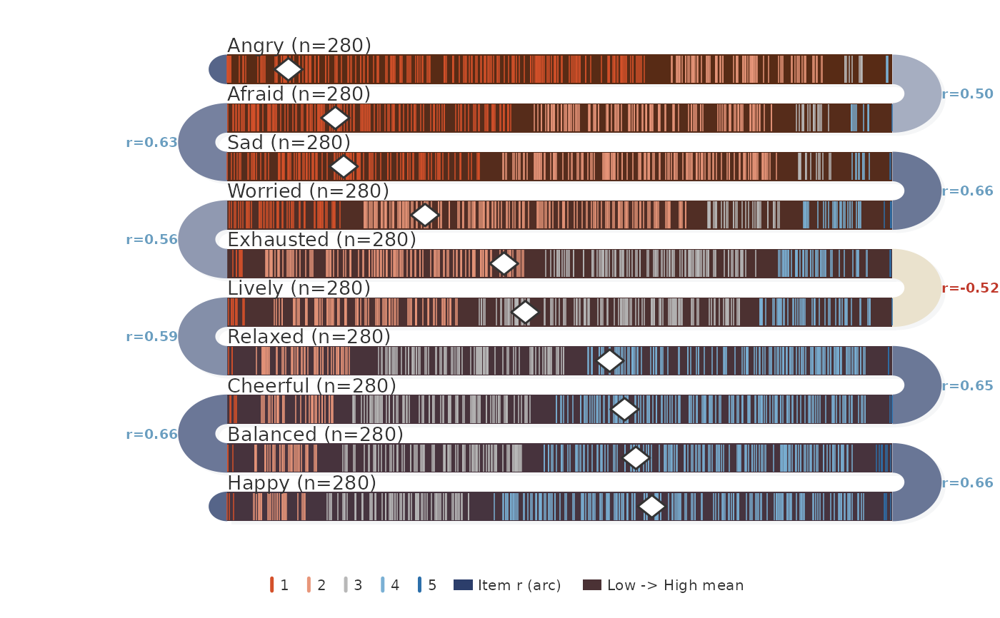

The plot functions return their layout invisibly as a snake_layout
object. as.data.frame() gives its tables: the geometry of the bands, the
correlations printed at the U-turns, or the size of the canvas.
Usage
# S3 method for class 'snake_layout'
as.data.frame(
x,
row.names = NULL,
optional = FALSE,
what = c("bands", "correlations", "canvas"),
...
)Arguments
- x
A
snake_layout, as returned bysurvey_snake(),survey_sequence(),sequential_dist(),activity_snake()orline_snake().- row.names, optional
Not used; present for compatibility with the generic.
- what
Which table:
"bands"(default),"correlations"or"canvas".- ...
Not used.
Value
A data frame.
"bands": one row per band, in drawing order, with columnsi(band index from 0),y_center,y_top,y_bottom,x_left,x_right(plot units),direction("ltr"or"rtl", the direction of the U-turn geometry) andread_direction(the direction in which the band's content is read)."correlations": one row per U-turn with columnsfrom,to(item names),r(Pearson correlation across the respondents who answered both items) andn(their number); available forsurvey_snake(arc_fill = "correlation")."canvas": one row with thewidthandheightof the canvas in plot units.
Conditions
snakeplot_no_table when what = "correlations" and the plot was not
drawn with arc_fill = "correlation".
See also
survey_snake() for the correlation arcs.
Examples
layout <- survey_snake(ema_emotions, sort_by = "mean",
arc_fill = "correlation")

as.data.frame(layout, what = "correlations")
#> from to r n
#> 1 Angry Afraid 0.4956768 280
#> 2 Afraid Sad 0.6265477 280
#> 3 Sad Worried 0.6583303 280
#> 4 Worried Exhausted 0.5565039 280
#> 5 Exhausted Lively -0.5216248 280
#> 6 Lively Relaxed 0.5865753 280
#> 7 Relaxed Cheerful 0.6546337 280
#> 8 Cheerful Balanced 0.6560112 280
#> 9 Balanced Happy 0.6614124 280
as.data.frame(layout)
#> i y_center y_top y_bottom x_left x_right direction read_direction
#> 1 0 44 30 58 143 643 ltr ltr
#> 2 1 90 76 104 143 643 rtl rtl
#> 3 2 136 122 150 143 643 ltr ltr
#> 4 3 182 168 196 143 643 rtl rtl
#> 5 4 228 214 242 143 643 ltr ltr
#> 6 5 274 260 288 143 643 rtl rtl
#> 7 6 320 306 334 143 643 ltr ltr
#> 8 7 366 352 380 143 643 rtl rtl
#> 9 8 412 398 426 143 643 ltr ltr
#> 10 9 458 444 472 143 643 rtl rtl